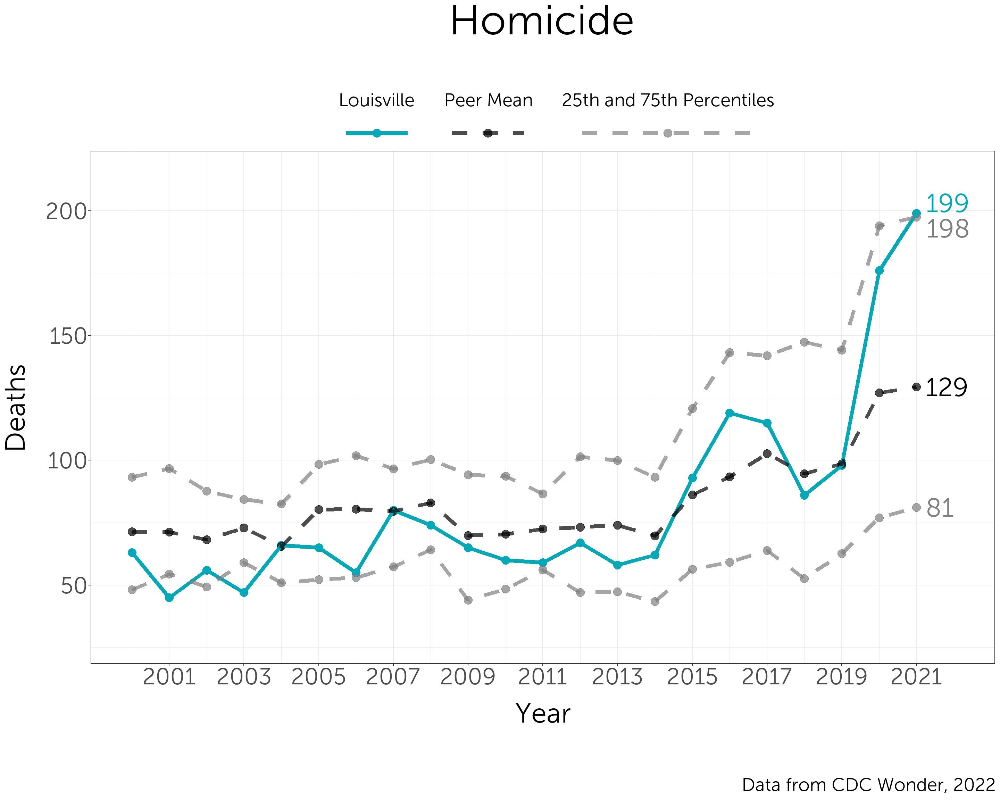
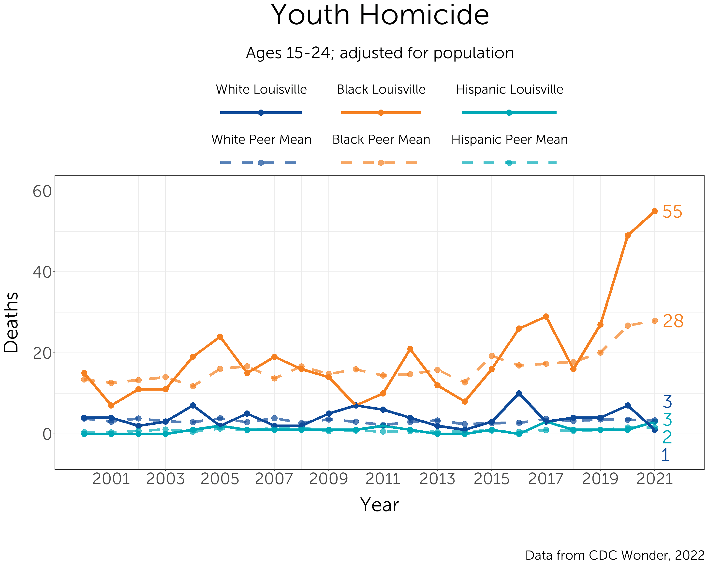
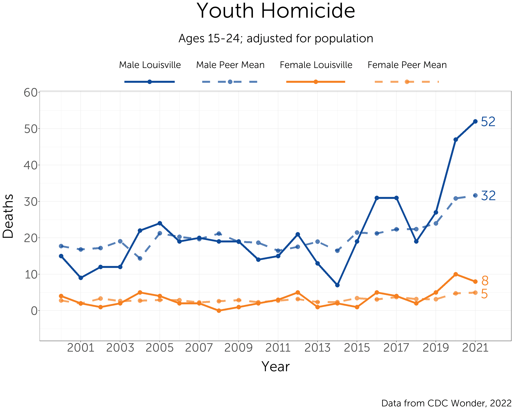
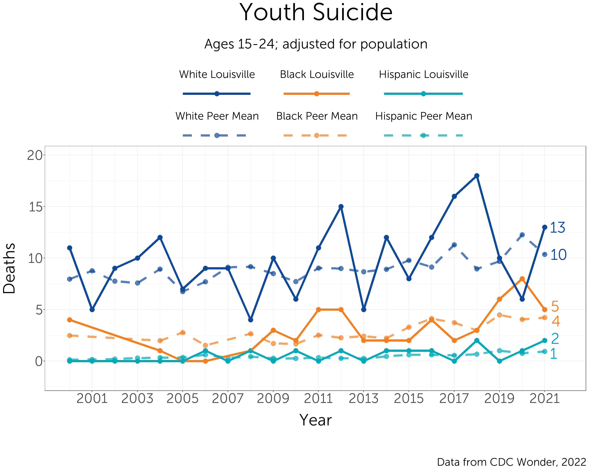
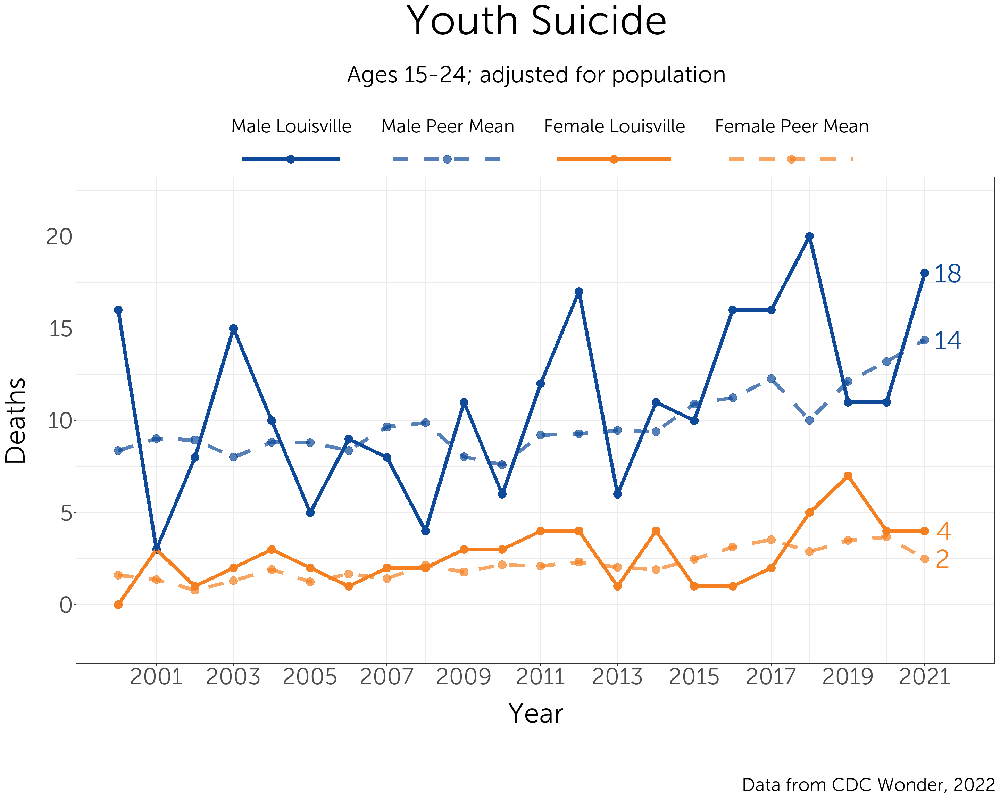
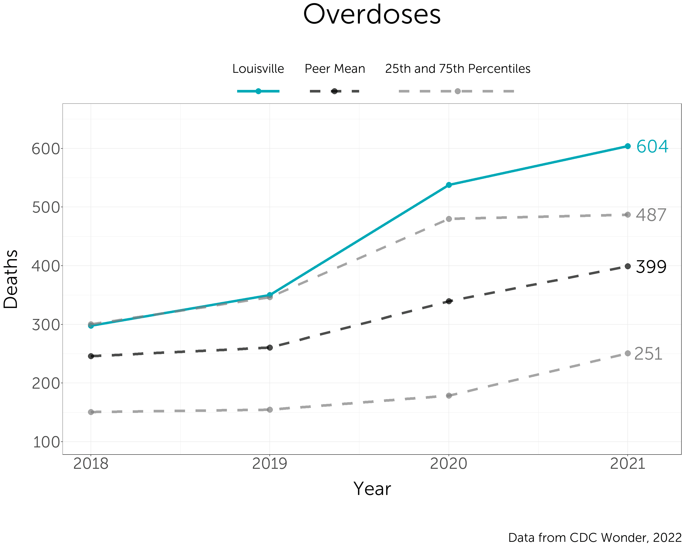
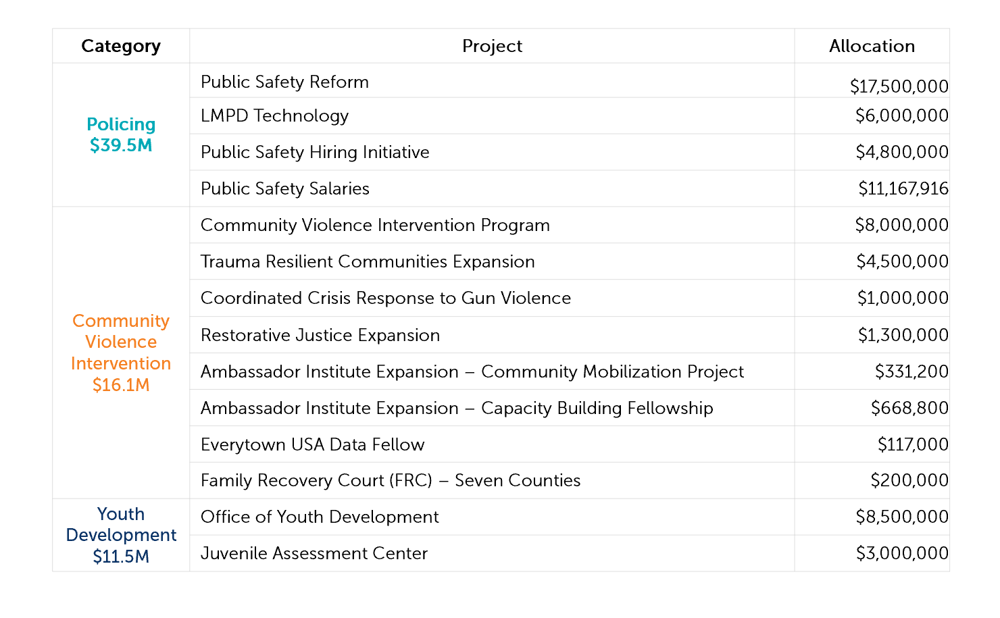

Investing in a Safer Louisville
library(glptools)
library(glpdata)
library(gt)
glp_load_packages(graphs = T)
showtext_auto()
font_add("Museo Sans", "MuseoSans_300.otf")
font_add("Museo Sans 300 Italic", "MuseoSans_300_Italic.otf")
knitr::opts_chunk$set(echo = TRUE, warning = FALSE, message = FALSE,
dev.args=list(bg="transparent"), fig.width=15, fig.height=12)Introduction
Through the American Rescue Plan, Louisville is making historic investments in violence prevention—at the same time that we are seeing historic levels of violence in our city. GLP is partnering with Cities United to create data on violence in our city and the investments we are making to create a safer Louisville.
Our goal is to make a positive contribution to support the work of people who have been working on the ground for years to address this issue. It is our deepest intention to contribute wisely to this topic, and our work reflects the outcome of months of conversations with community members, civic leaders, and violence intervention experts.
Based on the legislation in front of Metro Council, Public Safety will likely receive nearly $67 million in investment through ARP funds over the next four years.

Violence in Louisville
clean_wonder <- function(df, method = "sum"){
#new names for variables
names_recode <- c(
`County Code` = "FIPS",
`Residence County Code` = "FIPS",
`Year Code` = "year",
`Month Code` = "month",
`Single-Year Ages Code` = "age",
`Five-Year Age Groups Code` = "age_5_codes",
`Ten-Year Age Groups Code` = "age_10_codes",
Deaths = "deaths",
Population = "population",
`Birth Weight 12 Code` = "weight",
Births = "births",
Race = "race",
`Bridged Race` = "race",
`Mother's Bridged Race` = "race",
Gender = "sex",
`Age Adjusted Rate` = "rate",
`UCD - ICD-10 113 Cause List` = "cod",
`Multiple Cause of death Code` = "cod")
#list of variables to keep (same as above list)
keep_names <- c("FIPS", "year", "month", "age", "age_5_codes", "age_10_codes",
"deaths", "population", "weight", "births",
"race", "sex", "rate", "cod")
#list of variables to change to numeric
numeric_names <- c("year", "month", "age", "deaths", "population",
"weight", "births", "rate")
df <- df %>%
plyr::rename(
replace = names_recode,
warn_missing = FALSE)
if("age_10_codes" %in% names(df)){
age_10_df <- data.frame(
age_10_codes = c("1", "1-4", "5-14", "15-24", "25-34", "35-44",
"45-54", "55-64", "65-74", "75-84", "85+", "NS"),
age_10 = c(0:10, NA))
df %<>%
left_join(age_10_df, by = "age_10_codes") %>%
select(-age_10_codes)
}
if("month" %in% names(df)){
df %<>%
mutate(month = str_sub(month, 6, 7))
}
#filter rows containing totals (which do not contain specific years)
df <- df %>%
filter_at(df %cols_in% c("FIPS", "year", "age", "age_5", "age_10", "race", "sex"),
all_vars(!is.na(.)))
#convert variables to numeric and subset data frame to variables of interest
df <- df %>%
mutate_at(df %cols_in% numeric_names, as.numeric) %>%
select_at(df %cols_in% keep_names)
if("race" %in% names(df)){
df %<>%
mutate(
race = replace(race, race == "Black or African American", "black"),
race = replace(race, race == "White", "white"))
}
if("sex" %in% names(df)){
df %<>% mutate(sex = str_to_lower(sex))
}
df %<>%
pivot_longer(
df %cols_in% c("births", "deaths", "rate", "population"),
names_to = "var_type",
values_to = df %cols_in% c("births", "deaths", "rate")) %>%
mutate(var_type = case_when(
var_type %in% c("births", "deaths") ~ "estimate",
var_type %in% c("rate") ~ "rate",
var_type %in% c("population") ~ "population"))
if ("race" %not_in% names(df)) df$race <- "total"
if ("sex" %not_in% names(df)) df$sex <- "total"
df %<>% organize()
df
}deaths_total_99 <- wonder_time("intermediate_data/wonder/demographic_files/deaths_gender_total_99")
deaths_white_99 <- wonder_time("intermediate_data/wonder/demographic_files/deaths_gender_white_99")
deaths_black_99 <- wonder_time("intermediate_data/wonder/demographic_files/deaths_gender_black_99")
deaths_hispanic_99 <- wonder_time("intermediate_data/wonder/demographic_files/deaths_gender_hispanic_99")
deaths_total_99 %<>%
clean_wonder()
deaths_white_99 %<>%
clean_wonder() %>%
mutate(race = "white")
deaths_black_99 %<>%
clean_wonder() %>%
mutate(race = "black")
deaths_hispanic_99 %<>%
clean_wonder() %>%
mutate(race = "hispanic")
deaths_total_18 <- wonder_time("intermediate_data/wonder/demographic_files/deaths_gender_total_18")
deaths_blackwhite_18 <- wonder_time("intermediate_data/wonder/demographic_files/deaths_gender_blackwhite_18")
deaths_hispanic_18 <- wonder_time("intermediate_data/wonder/demographic_files/deaths_gender_hispanic_18")
deaths_total_18 %<>%
clean_wonder() %>%
mutate(race = "total") %>%
filter(year == 2021)
deaths_blackwhite_18 %<>%
rename(Race = `Single Race 6`) %>%
clean_wonder() %>%
filter(year == 2021)
deaths_hispanic_18 %<>%
clean_wonder() %>%
mutate(race = "hispanic") %>%
filter(year == 2021)
mortality_age <- bind_rows(deaths_total_99, deaths_white_99) %>%
bind_rows(deaths_black_99) %>%
bind_rows(deaths_hispanic_99) %>%
bind_rows(deaths_total_18) %>%
bind_rows(deaths_blackwhite_18) %>%
bind_rows(deaths_hispanic_18)
mortality_age %<>%
filter(year >= 2000) %>%
mutate(cod = case_when(
cod == "#Assault (homicide) (*U01-*U02,X85-Y09,Y87.1)" ~ "homicide",
cod == "Assault (homicide) by discharge of firearms (*U01.4,X93-X95)" ~ "homicide_gun",
cod == "Assault (homicide) by other and unspecified means and their sequelae (*U01.0-*U01.3,*U01.5-*U01.9,*U02,X85-X92,X96-Y09,Y87.1)" ~ "homicide_other",
cod == "#Intentional self-harm (suicide) (*U03,X60-X84,Y87.0)" ~ "suicide",
cod == "Intentional self-harm (suicide) by discharge of firearms (X72-X74)" ~ "suicide_gun",
cod == "Intentional self-harm (suicide) by other and unspecified means and their sequelae (*U03,X60-X71,X75-X84,Y87.0)" ~ "suicide_other"))
mortality_age %<>%
pivot_wider(names_from = "cod", values_from = "deaths")
mortality_age %<>%
mutate(
suicide_gun = if_else(is.na(suicide_gun), suicide - suicide_other, suicide_gun),
suicide_other = if_else(is.na(suicide_other), suicide - suicide_gun, suicide_other),
homicide_gun = if_else(is.na(homicide_gun), homicide - homicide_other, homicide_gun),
homicide_other = if_else(is.na(homicide_other), homicide - homicide_gun, homicide_other))
mortality_age_totals <- mortality_age %>%
filter(FIPS == "total") %>%
rename(
suicide_total = suicide,
suicide_gun_total = suicide_gun,
suicide_other_total = suicide_other,
homicide_total = homicide,
homicide_gun_total = homicide_gun,
homicide_other_total = homicide_other) %>%
select(-FIPS)
mortality_age %<>%
left_join(mortality_age_totals, by = c("year", "sex", "race", "var_type", "age_5_codes"))
mortality_age %<>%
transmute(
FIPS, year, sex, race, var_type,
age_5 = age_5_codes,
homicide = homicide - homicide_total,
homicide_gun = homicide_gun - homicide_gun_total,
homicide_other = homicide_other - homicide_other_total,
suicide = suicide - suicide_total,
suicide_gun = suicide_gun - suicide_gun_total,
suicide_other = suicide_other - suicide_other_total)
mortality_age_population <- mortality_age %>%
filter(var_type == "population") %>%
select(-var_type) %>%
select(FIPS, year, sex, race, age_5, population = homicide)
mortality_age_estimates <- mortality_age %>%
filter(var_type == "estimate") %>%
select(-var_type)
mortality_age <- left_join(mortality_age_estimates, mortality_age_population, by = c("FIPS", "year", "sex", "race", "age_5"))
rm(mortality_age_totals,
deaths_total_99, deaths_white_99, deaths_black_99, deaths_hispanic_99,
deaths_total_18, deaths_blackwhite_18, deaths_hispanic_18,
mortality_age_population, mortality_age_estimates)# Totals
cancer_18 <- read_tsv("intermediate_data/wonder/totals/cancer.txt")
# Suicide
cancer_suicide_18 <- read_tsv("intermediate_data/wonder/totals/cancer_suicide.txt")
cancer_suicide_gun_18 <- read_tsv("intermediate_data/wonder/totals/cancer_suicide_gun.txt")
cancer_suicide_other_18 <- read_tsv("intermediate_data/wonder/totals/cancer_suicide_other.txt")
# Homicide
cancer_homicide_18 <- read_tsv("intermediate_data/wonder/totals/cancer_homicide.txt")
cancer_homicide_gun_18 <- read_tsv("intermediate_data/wonder/totals/cancer_homicide_gun.txt")
cancer_homicide_other_18 <- read_tsv("intermediate_data/wonder/totals/cancer_homicide_other.txt")
# Totals
cancer_99 <- read_tsv("intermediate_data/wonder/totals/cancer_99.txt")
# Suicide
cancer_suicide_99 <- read_tsv("intermediate_data/wonder/totals/cancer_suicide_99.txt")
cancer_suicide_gun_99 <- read_tsv("intermediate_data/wonder/totals/cancer_suicide_gun_99.txt")
cancer_suicide_other_99 <- read_tsv("intermediate_data/wonder/totals/cancer_suicide_other_99.txt")
# Homicide
cancer_homicide_99 <- read_tsv("intermediate_data/wonder/totals/cancer_homicide_99.txt")
cancer_homicide_gun_99 <- read_tsv("intermediate_data/wonder/totals/cancer_homicide_gun_99.txt")
cancer_homicide_other_99 <- read_tsv("intermediate_data/wonder/totals/cancer_homicide_other_99.txt")
# Clean suicide data
cancer_99 %<>% clean_wonder %>% filter(year >= 2000)
cancer_18 %<>% clean_wonder %>% filter(year >= 2021)
cancer <- bind_rows(cancer_99, cancer_18) %>%
rename(cancer = deaths)
cancer_suicide_99 %<>% clean_wonder %>% filter(year >= 2000)
cancer_suicide_18 %<>% clean_wonder %>% filter(year >= 2021)
cancer_suicide <- bind_rows(cancer_suicide_99, cancer_suicide_18) %>%
rename(cancer_suicide = deaths)
cancer_suicide_gun_99 %<>% clean_wonder %>% filter(year >= 2000)
cancer_suicide_gun_18 %<>% clean_wonder %>% filter(year >= 2021)
cancer_suicide_gun <- bind_rows(cancer_suicide_gun_99, cancer_suicide_gun_18) %>%
rename(cancer_suicide_gun = deaths)
cancer_suicide_other_99 %<>% clean_wonder %>% filter(year >= 2000)
cancer_suicide_other_18 %<>% clean_wonder %>% filter(year >= 2021)
cancer_suicide_other <- bind_rows(cancer_suicide_other_99, cancer_suicide_other_18) %>%
rename(cancer_suicide_other = deaths)
# Clean homicide data
cancer_homicide_99 %<>% clean_wonder %>% filter(year >= 2000)
cancer_homicide_18 %<>% clean_wonder %>% filter(year >= 2021)
cancer_homicide <- bind_rows(cancer_homicide_99, cancer_homicide_18) %>%
rename(cancer_homicide = deaths)
cancer_homicide_gun_99 %<>% clean_wonder %>% filter(year >= 2000)
cancer_homicide_gun_18 %<>% clean_wonder %>% filter(year >= 2021)
cancer_homicide_gun <- bind_rows(cancer_homicide_gun_99, cancer_homicide_gun_18) %>%
rename(cancer_homicide_gun = deaths)
cancer_homicide_other_99 %<>% clean_wonder %>% filter(year >= 2000)
cancer_homicide_other_18 %<>% clean_wonder %>% filter(year >= 2021)
cancer_homicide_other <- bind_rows(cancer_homicide_other_99, cancer_homicide_other_18) %>%
rename(cancer_homicide_other = deaths)
# Combine clean dataframes
mortality_totals <-
bind_df(cancer,
cancer_suicide, cancer_suicide_gun, cancer_suicide_other,
cancer_homicide, cancer_homicide_gun, cancer_homicide_other)
mortality_totals_population <- mortality_totals %>%
filter(var_type == "population") %>%
transmute(FIPS, year, sex, race,
population = cancer)
mortality_totals_estimate <- mortality_totals %>%
filter(var_type == "estimate") %>%
transmute(
FIPS, year, sex, race,
suicide = cancer_suicide - cancer,
suicide_gun = cancer_suicide_gun - cancer,
suicide_other = cancer_suicide_other - cancer,
homicide = cancer_homicide - cancer,
homicide_gun = cancer_homicide_gun - cancer,
homicide_other = cancer_homicide_other - cancer)
mortality_totals <- bind_df(mortality_totals_estimate, mortality_totals_population)
mortality_totals %<>%
mutate(age_5 = "total")
rm(cancer,
cancer_homicide_99, cancer_homicide_gun_99, cancer_homicide_other_99,
cancer_suicide_99, cancer_suicide_gun_99, cancer_suicide_other_99,
cancer_homicide_18, cancer_homicide_gun_18, cancer_homicide_other_18,
cancer_suicide_18, cancer_suicide_gun_18, cancer_suicide_other_18,
cancer_homicide, cancer_homicide_gun, cancer_homicide_other,
cancer_suicide, cancer_suicide_gun, cancer_suicide_other,
mortality_totals_estimate, mortality_totals_population)mortality <- bind_rows(mortality_totals, mortality_age)
mortality_collapsed <- mortality %>%
group_by(FIPS, year, race, age_5) %>%
summarize(across(suicide:population, sum), .groups = "drop") %>%
mutate(sex = "total")
mortality %<>%
bind_rows(mortality_collapsed) %>%
select(FIPS, year, sex, race, age_5,
homicide, homicide_gun, homicide_other,
suicide, suicide_gun, suicide_other,
population) %>%
filter(FIPS != "total")
# Fix St. Louis
mortality %<>%
mutate(FIPS = replace(FIPS, FIPS %in% c("29189", "29510"), "MERGED")) %>%
group_by(FIPS, year, sex, race, age_5) %>%
summarize(across(homicide:population, sum), .groups = "drop")
mortality %<>%
group_by(year, sex, race, age_5) %>%
mutate(adj = population[FIPS == "21111"] / population) %>%
ungroup() %>%
filter(age_5 %not_in% c("1", "1-4", "5-9", "10-14", "70-74", "75-79", "80-84", "85-89", "90-94", "95-99", "100+", "NS"))
mortality_wide <- mortality %>%
mutate(across(homicide:suicide_other, ~ . * adj)) %>%
select(-adj, -population) %>%
pivot_longer(homicide:suicide_other, names_to = "cod") %>%
pivot_wider(names_from = "age_5", values_from = "value")
rm(mortality_totals, mortality_age)# All deaths
all <- read_tsv("intermediate_data/wonder/overdose_totals/all_18.txt")
# drug vs nondrug
drug <- read_tsv("intermediate_data/wonder/overdose_totals/drug_18.txt")
# Except
except_unintentional <- read_tsv("intermediate_data/wonder/overdose_totals/except_unintentional_18.txt")
except_suicide <- read_tsv("intermediate_data/wonder/overdose_totals/except_suicide_18.txt")
except_homicide <- read_tsv("intermediate_data/wonder/overdose_totals/except_homicide_18.txt")
except_undetermined <- read_tsv("intermediate_data/wonder/overdose_totals/except_undetermined_18.txt")
except_other <- read_tsv("intermediate_data/wonder/overdose_totals/except_other_18.txt")
all %<>%
clean_wonder() %>%
rename(all = deaths)
drug %<>%
clean_wonder() %>%
rename(drug = deaths)
except_unintentional %<>%
clean_wonder() %>%
rename(unintentional = deaths)
except_suicide %<>%
clean_wonder() %>%
rename(suicide = deaths)
except_homicide %<>%
clean_wonder() %>%
rename(homicide = deaths)
except_undetermined %<>%
clean_wonder() %>%
rename(undetermined = deaths)
except_other %<>%
clean_wonder() %>%
rename(other = deaths)
overdose <- bind_df(all, drug, except_unintentional, except_suicide, except_homicide, except_undetermined, except_other)
overdose_estimate <- overdose %>%
filter(var_type == "estimate") %>%
transmute(
FIPS, year, sex, race,
unintentional = all - unintentional,
suicide = all - suicide,
homicide = all - homicide,
undetermined = all - undetermined,
other = all - other,
overdoses = unintentional + suicide + homicide + undetermined + other)
overdose_population <- overdose %>%
filter(var_type == "population") %>%
select(
FIPS, year, sex, race, population = all)
overdose <- overdose_estimate %>%
left_join(overdose_population, by = c("FIPS", "year", "sex", "race"))
overdose_totals <- overdose %>%
group_by(FIPS, year, race) %>%
summarize(across(unintentional:population, sum), .groups = "drop") %>%
mutate(sex = "total")
overdose %<>%
bind_rows(overdose_totals)
overdose %<>%
group_by(year, sex, race) %>%
mutate(adj = population[FIPS == "21111"] / population) %>%
ungroup()Violence affects everyone in our community, but it affects young people most of all. In 2021, there were nearly 200 homicides in Louisville. Youth and young adults age 15 to 24 only make up 12% of our city’s population, but they committed 50% of those homicides, and they were the victims in 30% of them.
This graph shows the percent of all crime compared to the percent of homicides committed by age group. While violent and property crimes are prevalent across most age groups, the age group most likely to commit homicide is 15 to 19, followed by 20 to 24. This shows us that early intervention and support is necessary to curtail the most serious types of violence we see in our community.

Homicide
Overall
Ranking
Louisville ranks around the middle of its peers.
this_title <- "Homicide"
this_subtitle = "Adjusted for population"
this_caption <- "\n\nData from CDC Wonder, 2022"
this_caption_trend_graphs <- "\n\nData from CDC Wonder, 2022"
temp <- mortality %>%
filter(age_5 == "total") %>%
mutate(homicide = homicide * adj)
ranking(
temp,
homicide,
year = 2021,
plot_title = "Homicide, 2021",
caption_text = this_caption,
subtitle_text = this_subtitle,
y_title = "Deaths",
label_function = comma_format(accuracy = 1),
ranking_colors = FALSE,
order = "ascending")Trend
Louisville’s homicide rate in 2021 was the highest in history that we have seen as a city.
trend(
filter(temp, year < 2022),
homicide,
plot_title = this_title,
caption_text = this_caption,
axis_function = comma_format(accuracy = 1),
label_function = comma_format(accuracy = 1),
y_title = "Deaths")
# (I don't expect to include this data, so haven't tried to shape up how it's visualized.)
#
# This graph shows the number of homicides by age group in Louisville for 2021 compared to other cities. Louisville is the blue bar, the peer mean is the black dot, and the 25th and 75th percentiles are the whiskers coming off the dot.
temp <- mortality %>%
pull_peers(add_info = T)
graph_df <- temp %>%
filter(city == "Louisville",
sex == "total",
race == "total",
age_5 != "total") %>%
select(year, age_5, lou = homicide)
temp %<>%
filter(city != "Louisville",
current == 1,
sex == "total",
race == "total",
age_5 != "total") %>%
group_by(year, age_5) %>%
summarise(q1 = quantile(homicide, prob = 0.25, na.rm = TRUE),
mean = mean(homicide, na.rm = TRUE),
q3 = quantile(homicide, prob = 0.75, na.rm = TRUE),
.groups = "drop")
graph_df %<>%
left_join(temp, by = c("year", "age_5")) %>%
filter(year == 2021)
ggplot(graph_df) +
geom_bar(aes(x = age_5, y = lou), fill = "#00A9B7", stat = "identity") +
geom_errorbar(aes(x = age_5, ymin = q1, ymax = q3), width = 0.4, size = 1.3, color = "grey50") +
geom_point(aes(x = age_5, y = mean), size = 6) +
theme_bw(
base_size = 11,
base_family = "Museo Sans")Youth homicide
Ranking
this_title <- "Youth Homicide"
this_subtitle = "Ages 15-24; adjusted for population"
temp <- mortality %>%
filter(age_5 %in% c("15-19", "20-24")) %>%
group_by(FIPS, year, sex, race) %>%
summarize(homicide = sum(homicide * adj),
.groups = "drop")
ranking(
temp,
homicide,
year = 2021,
plot_title = "Youth Homicide, 2021",
caption_text = this_caption,
subtitle_text = this_subtitle,
y_title = "Deaths",
label_function = comma_format(accuracy = 1),
ranking_colors = FALSE,
order = "ascending")Trend
trend(
filter(mortality_wide, year < 2022, cod == "homicide"),
`15-19`:`20-24`,
cat = c("15-19" = "15-19", "20-24" = "20-24"),
plot_title = this_title,
subtitle_text = this_subtitle,
caption_text = this_caption_trend_graphs,
axis_function = comma_format(accuracy = 1),
label_function = comma_format(accuracy = 1),
pctiles = F,
y_title = "Deaths")Increase
temp %>%
group_by(FIPS) %>%
filter(sex == "total", race == "total") %>%
mutate(results = homicide[year == 2021] - homicide[year == 2000]) %>%
ungroup() %>%
ranking(
results,
plot_title = "Change in Youth Gun Homicide Victims, 2000 to 2021",
subtitle_text = this_subtitle,
caption_text = this_caption,
y_title = "Change in Deaths",
title_scale = 0.8,
label_function = comma_format(accuracy = 1),
order = "ascending")by Race
trend(
temp,
homicide,
cat = "race",
plot_title = this_title,
subtitle_text = this_subtitle,
caption_text = this_caption_trend_graphs,
axis_function = comma_format(accuracy = 1),
label_function = comma_format(accuracy = 1),
pctiles = F,
y_title = "Deaths")
by Gender
trend(
temp,
homicide,
cat = "sex",
plot_title = this_title,
subtitle_text = this_subtitle,
caption_text = this_caption_trend_graphs,
axis_function = comma_format(accuracy = 1),
label_function = comma_format(accuracy = 1),
pctiles = F,
y_title = "Deaths")
Clearance Rates
The clearance rate is the percent of cases that are solved. Louisville’s homicide clearance rate has been low compared to its peers over the past few years. A sharp rise in homicides since 2019 has contributed to the number of unsolved cases in our community.
setwd("..")
folders <- list.files("NIBRS", include.dirs = TRUE)
agencies <- data.frame()
incidents <- data.frame()
offenses <- data.frame()
arrestees <- data.frame()
clearances <- data.frame()
for (i in 1:length(folders)) {
f <- folders[i]
this_agency <- read_csv("NIBRS/" %p% f %p% "/agencies.csv")
this_incident <- read_csv("NIBRS/" %p% f %p% "/NIBRS_incident.csv", col_types = "nnnnldlnndclln")
this_offense <- read_csv("NIBRS/" %p% f %p% "/NIBRS_OFFENSE.csv")
this_arrestee <- read_csv("NIBRS/" %p% f %p% "/NIBRS_ARRESTEE.csv", col_types = "nnnndnccnncnncclcc")
this_clearance <- read_csv("NIBRS/" %p% f %p% "/NIBRS_CLEARED_EXCEPT.csv", col_types = "nccc")
agencies <- bind_rows(agencies, this_agency)
incidents <- bind_rows(incidents, this_incident)
offenses <- bind_rows(offenses, this_offense)
arrestees <- bind_rows(arrestees, this_arrestee)
clearances <- bind_rows(clearances, this_clearance)
}FIPS_join <- FIPS_info %>%
mutate(county = str_to_upper(county))
FIPS_join$county[FIPS_join$county == "ST. LOUIS"] <- "ST LOUIS"
agencies %<>%
transmute(
agency_id,
agency_name = str_to_title(ncic_agency_name),
county = county_name,
state_abbr = state_postal_abbr,
population) %>%
separate(county, ", ", into = c("county1", "county2", "county3", "county4")) %>%
pivot_longer(county1:county4, names_to = "county_col", values_to = "county") %>%
filter(!is.na(county)) %>%
select(-county_col) %>%
left_join(FIPS_join, by = c("county", "state_abbr")) %>%
filter(!is.na(FIPS))
peer_agencies <- agencies %>%
select(agency_id, FIPS)
peer_incidents <- incidents %>%
left_join(peer_agencies, by = "agency_id") %>%
filter(!is.na(FIPS))
peer_offenses <- offenses %>%
filter(offense_code %in% c("09A", "09B", "09C"))
peer_homicides <- peer_
table(peer_incidents$FIPS)
incident_simple
Suicide
Overall
Ranking
Louisville ranks around the middle of its peers.
this_title <- "Suicide"
this_subtitle = "Adjusted for population"
this_caption <- "\n\nData from CDC Wonder, 2022"
this_caption_trend_graphs <- "\n\nData from CDC Wonder, 2022"
temp <- mortality %>%
filter(age_5 == "total") %>%
mutate(suicide = suicide * adj)
ranking(
temp,
suicide,
year = 2021,
plot_title = "Suicide, 2021",
caption_text = this_caption,
subtitle_text = this_subtitle,
y_title = "Deaths",
label_function = comma_format(accuracy = 1),
ranking_colors = FALSE,
order = "ascending")Trend
Louisville’s homicide rate in 2021 was the highest in history that we have seen as a city.
trend(
filter(temp, year < 2022),
suicide,
plot_title = this_title,
caption_text = this_caption,
label_function = comma_format(accuracy = 1),
y_title = "Deaths")temp <- mortality %>%
pull_peers(add_info = T)
graph_df <- temp %>%
filter(city == "Louisville",
sex == "total",
race == "total",
age_5 != "total") %>%
select(year, age_5, lou = suicide)
temp %<>%
filter(city != "Louisville",
current == 1,
sex == "total",
race == "total",
age_5 != "total") %>%
group_by(year, age_5) %>%
summarise(q1 = quantile(suicide, prob = 0.25, na.rm = TRUE),
mean = mean(suicide, na.rm = TRUE),
q3 = quantile(suicide, prob = 0.75, na.rm = TRUE),
.groups = "drop")
graph_df %<>%
left_join(temp, by = c("year", "age_5")) %>%
filter(year == 2021)
ggplot(graph_df) +
geom_bar(aes(x = age_5, y = lou), fill = "#00A9B7", stat = "identity") +
geom_errorbar(aes(x = age_5, ymin = q1, ymax = q3), width = 0.4, size = 1.3, color = "grey50") +
geom_point(aes(x = age_5, y = mean), size = 6) +
theme_bw(
base_size = 11,
base_family = "Museo Sans")Youth suicide
(This doesn’t include poeple younger than 15.)
Ranking
this_title <- "Youth Suicide"
this_subtitle = "Ages 15-24; adjusted for population"
temp <- mortality %>%
filter(age_5 %in% c("15-19", "20-24")) %>%
group_by(FIPS, year, sex, race) %>%
summarize(suicide = sum(suicide * adj),
.groups = "drop")
ranking(
temp,
suicide,
year = 2021,
plot_title = "Youth Suicide, 2021",
caption_text = this_caption,
subtitle_text = this_subtitle,
y_title = "Deaths",
label_function = comma_format(accuracy = 1),
ranking_colors = FALSE,
order = "ascending")Trend
trend(
filter(mortality_wide, year < 2022, cod == "suicide"),
`15-19`:`20-24`,
cat = c("15-19" = "15-19", "20-24" = "20-24"),
plot_title = this_title,
subtitle_text = this_subtitle,
caption_text = this_caption_trend_graphs,
axis_function = comma_format(accuracy = 1),
label_function = comma_format(accuracy = 1),
pctiles = F,
y_title = "Deaths")by Race
trend(
temp,
suicide,
cat = "race",
plot_title = this_title,
subtitle_text = this_subtitle,
caption_text = this_caption_trend_graphs,
axis_function = comma_format(accuracy = 1),
label_function = comma_format(accuracy = 1),
pctiles = F,
y_title = "Deaths")
by Gender
trend(
temp,
suicide,
cat = "sex",
plot_title = this_title,
subtitle_text = this_subtitle,
caption_text = this_caption_trend_graphs,
axis_function = comma_format(accuracy = 1),
label_function = comma_format(accuracy = 1),
pctiles = F,
y_title = "Deaths")
Overdoses
Overall
Ranking
Louisville ranks around the middle of its peers.
this_title <- "Overdoses"
this_subtitle = "Adjusted for population"
this_caption <- "\n\nData from CDC Wonder, 2022"
this_caption_trend_graphs <- "\n\nData from CDC Wonder, 2022"
temp <- overdose %>%
mutate(overdoses = overdoses * adj)
ranking(
temp,
overdoses,
year = 2021,
plot_title = "Overdoses, 2021",
caption_text = this_caption,
subtitle_text = this_subtitle,
y_title = "Deaths",
label_function = comma_format(accuracy = 1),
ranking_colors = FALSE,
order = "ascending")Trend
Louisville’s homicide rate in 2021 was the highest in history that we have seen as a city.
trend(
filter(temp, year < 2022),
overdoses,
plot_title = this_title,
caption_text = this_caption,
axis_function = comma_format(accuracy = 1),
label_function = comma_format(accuracy = 1),
y_title = "Deaths")
Disconnected youth
Disconnected youth, or opportunity youth, are people age 16 to 24 who are not working or in school. While we are missing data for 2020 due to the pandemic, we see a sharp rise in the percent of youth who are disconnected.
Trend
by Race
Investing in youth development and violence intervention
Protective factors and risk factors
Protective factors are supports that provide positive influence on youth and encourage them to thrive, while risk factors make youth more inclined commit violence. Examples of protective factors include positive self-esteem and an experienced teacher at school, and examples of risk factors include substance abuse in the household and violence in their neighborhood.
See here for further information: https://www.samhsa.gov/sites/default/files/20190718-samhsa-risk-protective-factors.pdf
Nonprofit Investment
While these organizations do incredible work that has a tremendous impact on the youth who are able to participate, very little of this work is targeted toward youth who are of the age, gender, race, and neighborhoods that are most at-risk for violence.

Government Investment
City budget analysis
Louisville has made consistent investments since merger in public safety services such as LMPD, EMS, and Louisville Fire. However, the city has not made sustained investments in youth services. Among the organizations listed at the top section of this table, the Office of Safe and Healthy Neighborhoods (OSHN) promotes hands-on violence intervention strategies, the Office of Resilience and Community Services oversees vital community support programs and the city’s Office of Youth Services, KentuckianaWorks provides job and career opportunities, and Youth Transitional Services is our city’s last intervention as youth enter the state’s juvenile detention system. Comparing funding today to the funding allocated the year OSHN was formed, most of these organizations have received declining allocations from the city budget, and much of OSHN’s current budget is supported by ARP dollars that will only last through 2026.
American Rescue Plan Funding
This table shows the programs Louisville is funding through the American Rescue Plan.
See here for more detailed information on these projects: https://greaterlou.shinyapps.io/ARP-in-Lou/

OSHN staffing
Since OSHN became a standalone office in 2017, it has seen huge swings in staffing. Through the American Rescue Plan, Metro Government allocated an additional $16.1M in ARP dollars to be spent from 2022 to 2026. As a result, OSHN has increased staffing over the past few months, though there is uncertainty around whether these programs will continue after ARP dollars have been exhausted.